")
Hunter - Impetuous Impulses
Hunt those Implings | The Implings | Rewards | Development Team
Impetuous Impulses is only accessible by RuneScape Members. Please subscribe to get this feature.
Please note this is a 'Safe' task. You cannot die while playing Impetuous Impulses unless you have been poisoned before starting.

Impetuous Impulses is a Hunter-based game in which you track down and capture implings in order to get back all the trinkets and tools that they've stolen from people over the years. The game works in two distinct ways. You can either go to Puro-Puro through a crop circle portal and track the implings through a mystical wheat maze, or you can seek out those implings that have not yet returned to their home world, finding them all across RuneScape. Great rewards await the determined Hunter!

There is a permanent crop circle in Zanaris. To gain access to this portal you must have reached a certain point in the Lost City quest.
Crop circles also open up randomly in wheat fields all across RuneScape. They can be identified by a strange swirling area with a 'Centre of crop circle' option when you hover your mouse over it. Crop circles will stay open for a short period of time before fading away and reappearing in another wheat field somewhere in RuneScape. Anyone who enters Puro-Puro through one of these crop circles outside of Zanaris will receive a farming affinity boost, and will find they can pass through Puro-Puro's magical wheat faster, for thirty minutes after arriving.
Alternatively, you can wander about RuneScape, keeping a sharp eye out for any implings that might be floating about. These implings outside of Puro-Puro can be caught either with a net/jars or barehanded.
You must have a Hunter level of 17 to capture implings. The higher your Hunter level, the more types of impling you are able to catch.
As you use your Strength to push through magical wheat, a high Strength level is a definite advantage when chasing implings through the maze on Puro-Puro.
A higher Thieving level will also help to prevent the imp defenders from freeing your trapped implings. Equally, a higher Agility level will more easily allow you to capture implings barehanded, outside of Puro-Puro.
In order to make the most of Impetuous Impulses, it is useful to have completed Lost City so that you can have easy, guaranteed access to Puro-Puro.
You do not need any equipment to start playing Impetuous Impulses, as it is all supplied by Elnock Inquisitor. You may find it useful, however, to have a few butterfly jars close at hand in case you run out of magical impling jars. Outside of Puro-Puro, you will find you don't need either jars or a butterfly net (travelling from Puro-Puro to RuneScape tires out the poor little blighters), but you will find it easier to catch these implings with them. If you are attempting to catch them barehanded, you'll find it gets easier as your Agility level increases.
Once you have found your way into Puro-Puro for the first time - either through Zanaris or a random crop circle elsewhere - you should take the time to speak to both the impling there (Immenizz) and Elnock Inquisitor.
 Elnock Inquisitor is a gnome investigator employed by some mysterious individuals to track down all their missing trinkets, toys and equipment. He has been charged to trade with those who come to Puro-Puro, exchanging captured implings for ever more useful equipment.
Elnock Inquisitor is a gnome investigator employed by some mysterious individuals to track down all their missing trinkets, toys and equipment. He has been charged to trade with those who come to Puro-Puro, exchanging captured implings for ever more useful equipment.
Elnock will explain to you how to move about the maze and how to catch implings. He will also give you all the equipment you need to start hunting the little blighters through the magical wheat maze: a butterfly net and some impling jars. Elnock will also sell you up to ten impling jars per day, and you can store your butterfly net, some imp repellent and up to 127 impling jars with him between visits.
There is no time limit on hunting implings - the only restrictions will be your determination and the space in your inventory!
Moving around the Maze
To get into the maze, you will need to push through the magical wheat. To do so, simply right-click on one of the walls of grain and select 'Push-through Magical wheat'. Depending on your Strength level, and whether or not you entered through a crop circle outside of Zanaris, you will get through the wheat quickly or slowly.You will notice at this point that your minimap shows nothing - this is because of the mystical nature of Puro-Puro. Even more so than Zanaris, Puro-Puro is saturated with magical energy, and is prone to changing quickly and strangely. You will discover walls of wheat where once it was clear, and new passages through which to pursue the implings.
Catching implings

To claim a reward from a captured impling, simply click on the jar. This will set the impling free, who will be so grateful that they leave their treasure behind. Depending on the level of the impling, you could get almost anything from a single bowstring to the components of dragon arrows! Spirit implings have one small exception: if what they are carrying is a Summoning charm of some sort, you will loot their jar immediately and set them free; if they're carrying pouches or pouch ingredients, you will capture them in a jar (which is tradeable) as normal.
If you want to save up your implings you can take them to Elnock Inquisitor to trade them in for more impling jars, a magical butterfly net, a jar generator or imp repellent.
Beware of the imps as you wander about the maze - imps feel some kinship with the implings and are quite unhappy about their friends being captured. Imps will attempt to pick your pockets to set any captured implings free. The higher your Thieving level, the harder they'll have to try, so a good Thieving level is an advantage. Having some imp repellent in your inventory will also make things a bit more difficult for them. Note that it is only the imps in the maze that will attempt to free implings.
If an imp is turned away by any imp repellent you happen to be carrying, they'll leave you alone for a minute. If they steal (or fail at stealing) an impling jar from you, though, you'll have two minutes of imp-free hunting.
When you tire of chasing the helpless little blighters about, you can return to the wheat field you came from by clicking on the crop circle in the centre of the maze.
Implings in RuneScape
Implings can also be found almost anywhere in RuneScape, and because they're more spread out and more difficult to find they grant more Hunter experience should you catch them. You'll need to keep your eyes open, but the more elusive impling types tend to be found more often in RuneScape than in Puro-Puro...Despite being harder to find in RuneScape, such implings are easier to catch, and you will find that you do not need impling jars or a butterfly net to capture them, particularly if you have high Agility. It is trickier to catch them barehanded, though, so it might take you a few attempts. Also, catching them without a jar means you'll just loot them immediately and let them go. If you want an easier catch, though, or want to keep the captured impling, you can still use a butterfly net and jars, should you want.
You may also find it useful to know how to make impling jars from butterfly jars. The jars used to hold captured implings are treated with refined imp repellent. You can get unrefined imp repellent either from trading with Elnock, or by making it using anchovy oil, some flowers and the lamp oil still in Rimmington.
To make anchovy oil, you must first grind up 8 anchovies using a pestle and mortar. The resulting anchovy paste is too thick to be used effectively, so you will need to use a sieve (which you can get from the Chemist) to extract the oil while you have an empty vial in your inventory. This will give you a vial of anchovy oil.
| 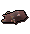 | + | 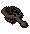 | + |  |
= | 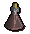 |
You should then use some flowers on the vial. You can get flowers from Farming or mithril seeds. This isn't quite what you want, so you should head to Rimmington and use the vial on the lamp oil still. You can then use a butterfly jar on the still to convert it into an impling jar.
| + | 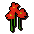 | = |  |
|||
|
+ | 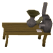 | + |  |
= | 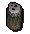 |
Note: The experience you receive from capturing implings varies according to whether you capture them in the maze on Puro-Puro or in the lands of RuneScape.
| Impling | Levels Required |
Experience gained (Maze) |
Experience gained (World) |
|
 Baby impling |
17 |
20 | 25 | |
 Young impling |
22 |
48 | 65 | |
| 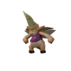 Gourmet impling |
28 |
82 | 113 | |
| 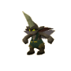 Earth impling |
36 |
126 | 177 | |
 Essence impling |
42 |
160 | 225 | |
 Eclectic impling |
50 |
205 | 289 | |
 Spirit impling |
54 |
227 | 321 | |
 Nature impling |
58 |
250 | 353 | |
| 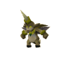 Magpie impling |
65 |
289 | 409 | |
| 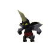 Ninja impling |
74 |
339 | 481 | |
 Pirate impling* |
76 |
350 | 497 | |
| 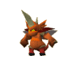 Dragon impling |
83 |
390 | 553 | |
| 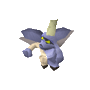 Zombie impling |
87 |
412 | 585 | |
 Kingly impling |
91 |
434 | 617 |
* You can only catch pirate implings if you have completed Rocking Out.
You can trade captured implings for equipment from Elnock Inquisitor. To trade with Elnock, simply right-click on him and select 'Trade'. This will bring up a trade window.
Elnock will trade any captured impling for 3 jars, or the following combinations:
Imp repellent reduces the chances of imp defenders rescuing captured implings from your inventory.
Magic butterfly nets increase your chances of successfully netting implings and butterflies.
Jar generators will provide you with free butterfly and impling jars. To create a new jar, simply right-click on the generator and select the type of jar you wish to create. Each generator has a limited number of charges, though, and will disappear when it is exhausted. You will have to trade with Elnock to get another generator.
 In addition to the trade options for dealing with Elnock Inquisitor, you can loot the captured implings. Implings carry things that people desire, though some are better at it than others. Very young implings have yet to figure out what people like, and often have a taste for odds and ends rather than treasures and tools, so a baby impling may only carry a bowstring. Older implings tend to gain a taste for a certain type of object, though, so a gourmet impling is likely to carry food, a nature impling might carry seeds, and dragon implings are known to carry the components of dragon arrows. Kingly implings have also been known to steal clothing from the various lords, ladies and (now quite chilly) kings and queens of RuneScape. Perhaps you'll find enough regal attire to own a full outfit...
In addition to the trade options for dealing with Elnock Inquisitor, you can loot the captured implings. Implings carry things that people desire, though some are better at it than others. Very young implings have yet to figure out what people like, and often have a taste for odds and ends rather than treasures and tools, so a baby impling may only carry a bowstring. Older implings tend to gain a taste for a certain type of object, though, so a gourmet impling is likely to carry food, a nature impling might carry seeds, and dragon implings are known to carry the components of dragon arrows. Kingly implings have also been known to steal clothing from the various lords, ladies and (now quite chilly) kings and queens of RuneScape. Perhaps you'll find enough regal attire to own a full outfit...
| Original | Rework | |||
| Developer: | Chihiro Y | Developer: | Frédérique M | |
| Graphics: | Linh N, Damian C, Giuseppe G, Wayne M | Graphics: | Daniel J, Kris F, James W, Matthew M, Matthew N | |
| QA: | Andy C, Adam D | QA: | Dan G, Daniel O, James H | |
| Audio: | Adam B | |||

More articles in
Hunter (Members Only)
|
|